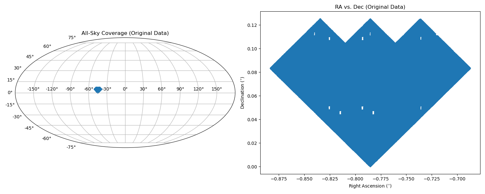
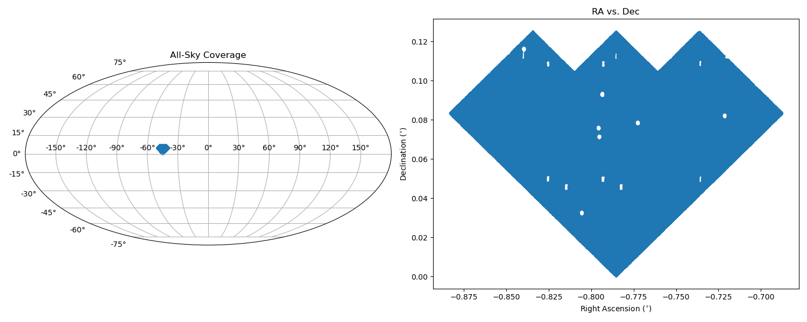
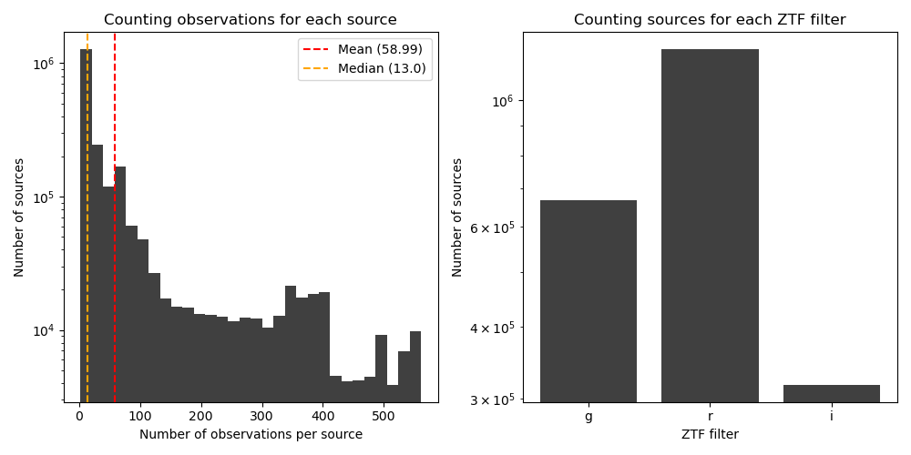
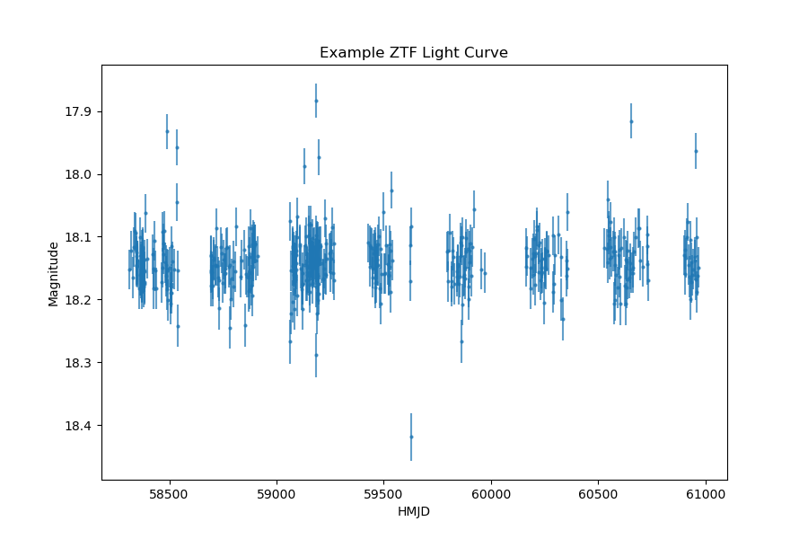
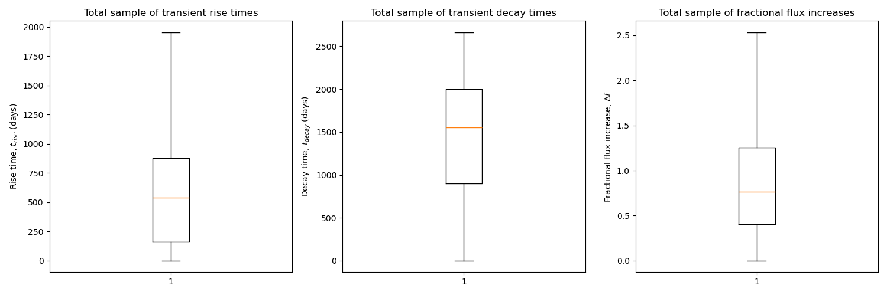

The data that will be used for this project includes the Zwicky Transient Facility (ZTF) DR24 transient detections. DR24 was released by
NASA's Infrared Science Archive (IRSA) and includes observations from 03/2018 - 11/2025. This total data release contains 69.7 million
single-exposure images, 188,000 co-added images, 1,043 billion source detections, and 5.32 billion lightcurves
(https://www.ztf.caltech.edu/ztf-public-releases.html). This is split among the public and private samples. This project will use only a
small fraction of the public data. For samples of data larger than about 1,000 detections, this data can be acquired in the form of
Parquet/HATS collection, which ultimately allows for cloud access of the data rather than commiting the large datasets to memory. There
are two primary Parquet/HATS collections: Objects Table and Lightcurves. For this project,
Objects Table will provide sky positions of the transients and Lightcurves will provide lightcurve
features. These features will be transformed into useful quantities to measure the peak amplitudes, durations, and variability of each
transient detection. The Objects Table and Lightcurves HATS collections can be found at the following
paths, which can be directly read into a python notebook for analysis:
Once the HATS catalog data was read into a local jupyter notebook, several filters needed to be applied for data cleaning purposes. First,
the catalog contains 12,485 partitions, which split the data into sky position bins. Each partition contains a very large number of
transient detections. Therefore, only 10 partitions are computed at a time. In particular, the first 10 partitions provides on the order of 100,000 observations. This is the sample of data that will be
used for Assignment 1. Throughout the project, it will be possible to sample other partitions depending on sky position interests. Once
these partitions are chosen, the data for each transient source is sorted chronologically by observation time, and then filtered such that
only sources with multiple observations with no flagged detections (catflags=0) are chosen. With the final set of observations at hand, a python function iterates through the detections and
computes relevant amplitudes and temporal signatures that will be used as features in the final machine learning dataset. The raw data
provides objects idenitifiers, sky positions, photometric bands, times of observation, and apparent magnitudes (brightness). In particular,
the times of observation come in units of Heliocentric Modified Julian Days, which are converted into seconds. From this set of raw data,
many useful physical quantities can be derived, which are shown in the Table 1 below. The primary analysis in the course project will focus on
quantities including the flux_amplitude, flux_ratio, rise_time, decay_time, rise_flux, and
decay_flux. In modern observations, these lightcurve quantities show lots of variability in different wavelength bands.

Figure 1: Original sky position data (before cleaning) plotted in declination vs. right ascension on an all-sky map and zoomed in.
Right ascension and declination measure angles on the sky and are analagous to latitude and longitude. Both are measured in units of degrees.
From this plot, it is clear that the sample of data chosen lies close to the celestial equator.

Figure 2: Sky position data (after cleaning) plotted in declination vs. right ascension on an all-sky map and zoomed in.
Right ascension and declination measure angles on the sky and are analagous to latitude and longitude. Both are measured in units of degrees.
From this plot, it is clear that the sample of data chosen lies close to the celestial equator. In this case, the cleaned data has
created some extra gaps in the data. The changes are minimal when looking at these plots, since the sky coverage is very dense. However,
the original sample contains 3,541,887 data points while the cleaned sample contains 2,212,201 data points (about 62% of the original
sample).

Figure 3: Histograms that show the number of observations in the cleaned sample of data. The left panel shows the number of observations
per transient source. The cleaned data contains only sources with at least two observations, but some sources can have up to about 500
observations. The mean and median of the distribution are shown in red and orange respectively. The right panel shows the number of
transient sources with detections in the different photometric bands (g, r, and i). These photometric bands cover the optical wavelength
range, and correspond more specifically to blue - green, red, and near infrared - deep red. It is clear that the r-band has the most
source observations.

Figure 4: An example ZTF lightcurve. This lightcurve example was pulled from the cleaned dataset. In order to plot a transient
lightcurve, the original magnitude and HMJD data is needed. These data were extracted from the raw data using the objects unique
identifier, which is also stored in the cleaned dataset. Heliocentric Modified Julian Days are measured in days relative to a
reference date. Magnitudes are a unitless measure of brightness for astronomical sources, and follow an inverse relationship
(larger magnitude is dimmer). The magnitude uncertainty is included as error bars in this figure. This is an observation that was
flagged as a transient by ZTF, however, determining that it is truly a transient by eye is a more difficult task. This is where
machine learning may help!

Figure 5: Three boxplots that summarize the statistical data for the transient rise times, decay times, and fractional flux increases.
The transient rise time is defined as the time elapsed from the beginning of the observation to the peak flux (or magnitude).
Similarly, the transient decay time is defined as the time elapse from the peak flux to the end of the observation. These can
also be calculated relative to a flux value such as 50% of the peak flux. Finally, the fractional flux increase is defined as the
difference between the maximum and minimum flux divided by the median flux. This gives a measure of how much the flux has increased
during the transient. The boxplots show the median, inner-quartile range, and range of these statistical values for the cleaned dataset.
Outliers were removed from these figures for visual purposes.